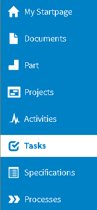
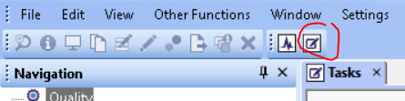
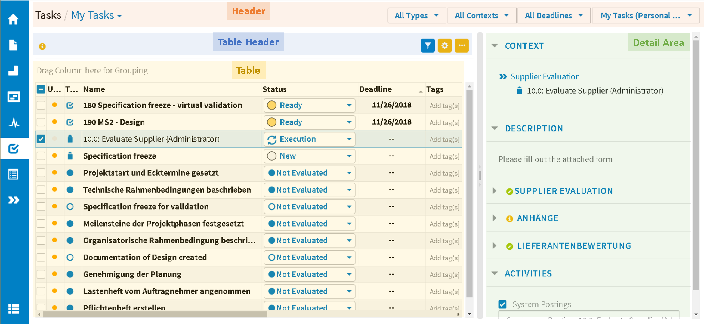

User interface¶
Start CONTACT Tasks¶

Start CONTACT Tasks (Web Client)

Start CONTACT Tasks (Windows Client)
Click the Tasks icon in the navigation area to start CONTACT Tasks.
Areas of CONTACT Tasks¶

Areas of CONTACT Tasks
The interface of CONTACT Tasks is divided into four areas:
- Header (including user views and filters)
- Table header (including notifications and table settings)
- Table (including the grouping pane)
- Detail area